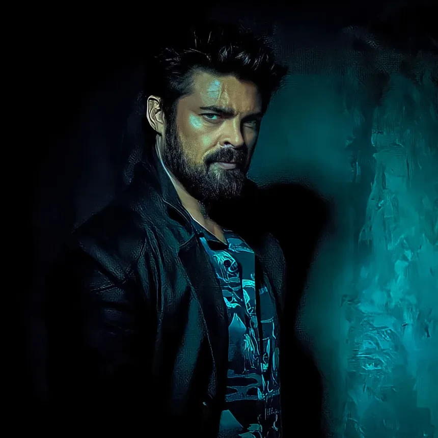
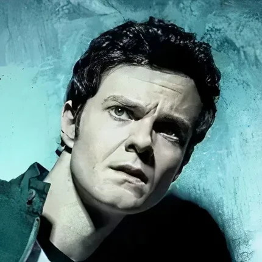
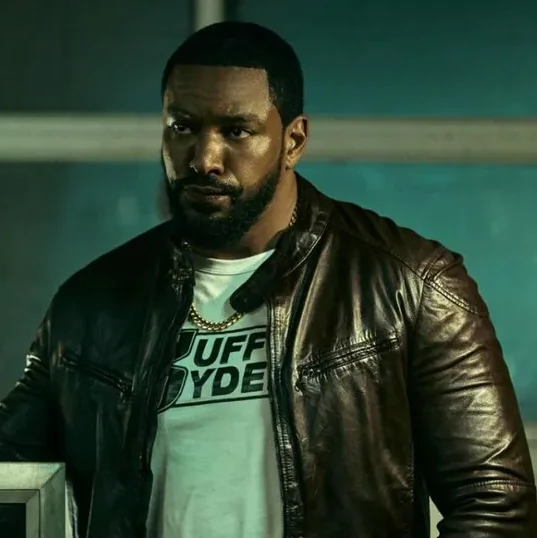
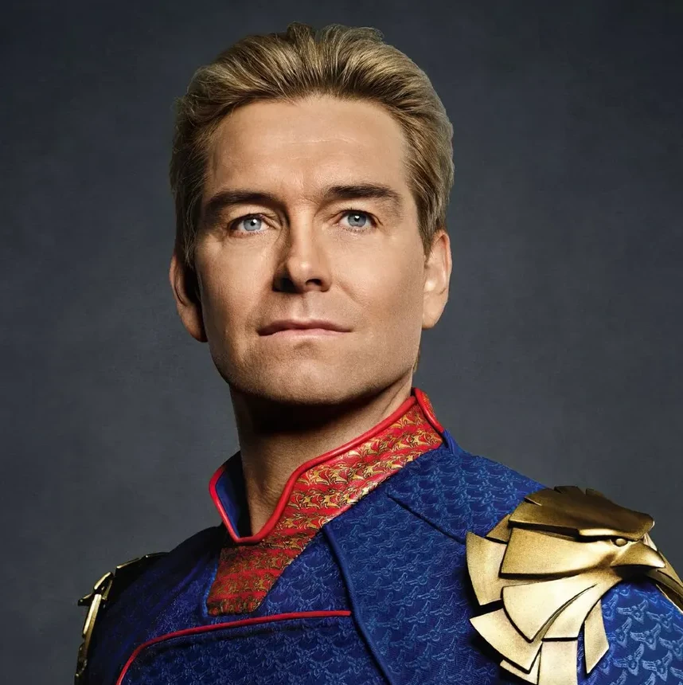
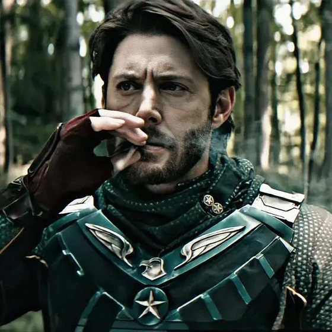
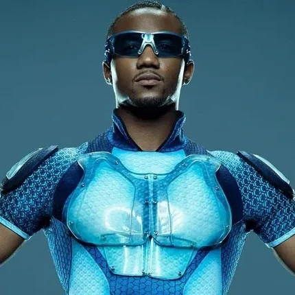

The boys
Sinopse
Elenco
Streaming
Nova Temporada
Personagens
Billy Butcher
Hughie
Mother's Milk
Homelander
Soldier Boy
A-train
Temporadas
1ª Temporada
2ª Temporada
3ª Temporada
4ª Temporada
Produtores
Jason Netter
Neal H. Moritz
Dan Trachtenberg
Philip Sgriccia
Craig Rosenberg
Outros
Gen V
HQs
Prime Video
Trailer Gen V 2ª Temporada
Os Sete
Personagens principais
a

Billy Butcher

Hughie

Mother's Milk

Homelander

SoldierBoy

A-train